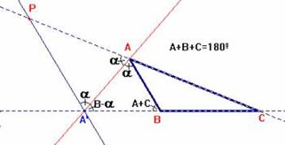
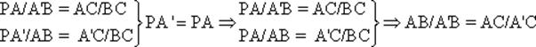
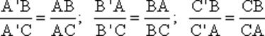
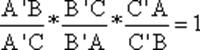
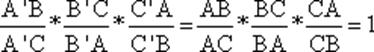
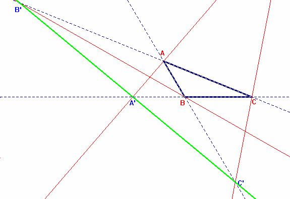

Problema 96.-
Un problema de las bisectrices exteriores.
Las bisectrices exteriores de los tres ángulos de un triángulo escaleno cortan a sus tres lados opuestos en tres puntos que están alineados.
Solución de F. Damián Aranda Ballesteros profesor de Matemáticas del IES Blas Infante en Córdoba (18 de Mayo de 2003)
|  |
Teorema de la
bisectriz exterior (o interior)de un triángulo. Dado el triángulo ABC, trazamos la bisectriz exterior correspondiente al ángulo A. Si esta bisectriz corta al lado opuesto en el punto A' entonces se verifica la igualdad: AB/A'B=AC/A'C. |
Dem.-
Trazando la paralela al lado AB por el punto A', obtenemos los triángulos semejantes PA'C y ABC, con PA'=PA, por ser PA'A triángulo isósceles, con ángulos iguales en A y A'.
Podemos así establecer las siguientes relaciones entre segmentos proporcionales:

Procediendo de igual modo con las tres bisectrices exteriores del triángulo ABC escaleno dado, obtenemos:

Vemos que así se verifica:

ya que:

Aplicando el Teorema de Menelao en su forma recíproca los puntos A', B' y C' estarían alineados.
